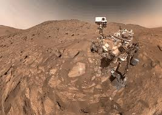
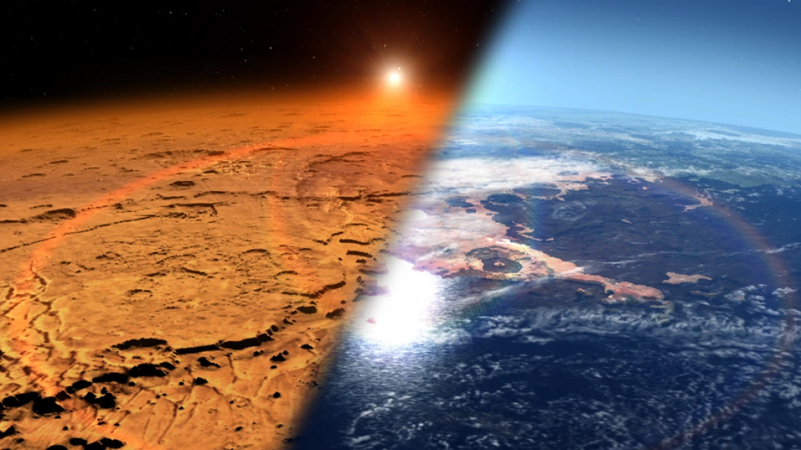

The Mission
The mission to make it to Mars is one of the most ambitious endeavors in the history of space exploration. With advancements in rocket technology, life support systems, and space habitats, humanity is closer than ever to reaching the Red Planet. The journey, which could take anywhere from 6 to 9 months depending on the launch window, requires overcoming numerous challenges, from extreme radiation exposure to the complexities of landing and sustaining life on Mars.As we push the boundaries of science and innovation, the goal is not just to visit Mars, but to establish a long-term human presence, paving the way for future generations to live and thrive on another world. This mission is not only a testament to human ingenuity but also a stepping stone for the exploration of the wider cosmos.The success of this mission will rely on international collaboration, with space agencies like NASA, ESA, and private companies working together to tackle the many obstacles ahead.  Innovations in propulsion, such as nuclear thermal propulsion, could drastically reduce travel time and make Mars more accessible. Once on the Martian surface, astronauts will need to adapt to the planet’s low gravity, thin atmosphere, and extreme temperatures, requiring new solutions for habitat construction and food production. Advanced robotics and AI will play a crucial role in assisting astronauts with tasks that would otherwise be too dangerous or labor-intensive. Ultimately, a manned mission to Mars could inspire a new era of space exploration, opening the door to further missions to distant worlds and even beyond our solar system. The journey to Mars also requires developing technologies that will ensure the safety and well-being of astronauts over the course of the long voyage. Life support systems will need to be robust enough to maintain a breathable atmosphere, recycle water, and manage waste for months on end. Additionally, solutions for psychological health will be critical, as astronauts will face isolation and confinement, far from the support networks and comforts of Earth. Researchers are already exploring ways to simulate the Martian environment on Earth, testing how crew members cope with the psychological challenges of living in a sealed habitat, light-years from home. nce astronauts arrive on Mars, the work doesn’t stop. Establishing a sustainable base will be the next crucial step. Using in-situ resources, or "ISRU," could help reduce the need for constant resupply from Earth. Technologies are being developed to extract water from the Martian soil, harness solar energy, and even produce oxygen and fuel from local resources.  This approach would make a long-term human presence on Mars much more feasible, allowing for the creation of habitats that support not only astronauts but eventually, future settlers. The exploration of Mars also holds the potential for groundbreaking scientific discoveries. From studying its geology and atmosphere to understanding its history of water, Mars holds clues to the evolution of the solar system and the potential for life beyond Earth. Finding microbial life—past or present—on Mars would have profound implications for our understanding of life in the universe. In addition, studying the planet’s climate and geology could provide insights into how Earth might evolve in the future, offering valuable lessons on planetary sustainability.International collaboration will be key to overcoming the enormous cost and technical challenges of a Mars mission. The combined expertise of space agencies and private companies will be crucial for solving the many obstacles that lie ahead. With space exploration rapidly evolving, new partnerships and investments are expected to accelerate development in the coming years. A collaborative effort will not only help fund the mission but also ensure that we share knowledge, technology, and expertise to maximize the potential for success. Mars exploration also raises questions about humanity’s role in the universe. As we advance our capabilities to travel and live on other planets, we are faced with ethical considerations about how we interact with these environments. How can we protect Mars from contamination, and should we focus on preservation or colonization? These questions will need to be answered as we push forward with the mission to Mars, setting a precedent for future exploration of other celestial bodies.Ultimately, the mission to Mars is more than just about reaching another planet. It is about expanding the horizons of human potential and ensuring that humanity becomes a multi-planetary species. The technologies, knowledge, and partnerships forged during this endeavor will not only help us reach Mars but also lay the groundwork for exploring deeper into the cosmos, opening up a future where space is no longer the final frontier but a realm for all of humanity.